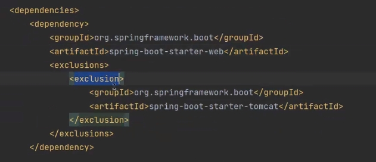

1.springboot启动需要启动哪些服务。
springboot启动要运行在tomacat和jetty。(java web应用服务器),springboot需要创建接口服务(springMVC里的配置DispatcherServlet)。
DispatcherServlet————根据配置的包路径去扫描容器将符合条件的方法返回给系统。创建时需要传入容器对象。
Tomcat和Jetty都是一种Servlet引擎，他们都支持标准的servlet规范和JavaEE的规范。
Jetty的架构比Tomcat的更为简单
Jetty的架构是基于Handler来实现的，主要的扩展功能都可以用Handler来实现，扩展简单。
Tomcat的架构是基于容器设计的，进行扩展是需要了解Tomcat的整体设计结构，不易扩展。
Jetty和Tomcat性能方面差异不大
Jetty可以同时处理大量连接而且可以长时间保持连接，适合于web聊天应用等等。
Jetty的架构简单，因此作为服务器，Jetty可以按需加载组件，减少不需要的组件，减少了服务器内存开销，从而提高服务器性能。
Jetty默认采用NIO结束在处理I/O请求上更占优势，在处理静态资源时，性能较高
Tomcat适合处理少数非常繁忙的链接，也就是说链接生命周期短的话，Tomcat的总体性能更高。
Tomcat默认采用BIO处理I/O请求，在处理静态资源时，性能较差。
Jetty的应用更加快速，修改简单，对新的Servlet规范的支持较好。
Tomcat目前应用比较广泛，对JavaEE和Servlet的支持更加全面，很多特性会直接集成进来
2.创建容器扫描
在启动类上添加@ComponentScan("包路径")的方式，将指定要扫码的包路径返回。一般在启动类自定义注解中，添加完成包的扫码。
启动类扫码run()方法中传入的类。在传入的类中，扫码类的注解，获取到应该扫码的路径。根据路径创建容器。在把容易创建传递到DispatcherServlet中。
3.spring加载配置类源码，基本实现
spring配置bean需要手动添加，springboot会自动配置。springboot配置bean实现方式。
在pom引入配置后，可以找到改自动配置的包，包下有此类的配置文件，即Configuration类。Configuration类也需要进行扫码，一般用@import(）注解进行引入，因为引入的过多不能一个一个扫码所以springboot的解决方法是，在jar包下有META-INF\spring.factcries 此文件记录了该jar的所有自动配置类名字。spring读取此文件进行解析，避免了全部扫描。扫描完所有类后，spring会对此类进行过滤。当没有使用到此类后，不会返回给spring容器。
判断类是否用到的方法是，在类上有@ConditionalOnClass注解里面包含此类关联的加载类。系统会对ConditionalOnClass注解中的类进行判断。当加载了其中一个，那么这个自动配置类就是被使用了。和之前的问题一样，spring不能去读取每一个自动配置类的判断类。所以在spring.factories配置文件下还有个后缀为metadata.properties的配置文件，里面包含了所有自动配置类(key)的判断类信息。spring对自动配置类进行过滤，必须全部过滤判断配置的类是否加载了。spring使用多线程的方式对所有的自动配置类进行判断。
4.其他知识点
在pom文件中，引入依赖。又想排除其中的部分依赖，可以采用的方式。

对bean添加指定条件。@Bean下添加@Conditional()。此注解集成了condition类，所以需要写一个继承了Condition的类。实现matchs方法，此方法就是给bean添加条件的方法。符合条件返回true，不符合返回false。
maven会依赖传递，某个模块依赖了springboot，那么他也会依赖springboot下的tomacat依赖。
如何判断是否获取了相关的bean对象。可以使用WebApplicationContext中的getBeansOfType获取bean。